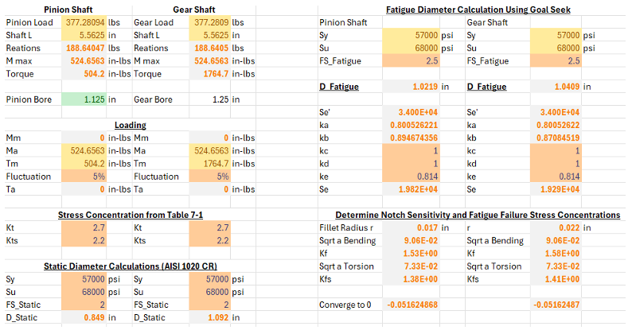

7.5 HP Single-Reduction Spur Gearbox Design
Outcome
Engineered and validated a robust, cost-effective agricultural gearbox, structurally verifying rotating components to prevent fatigue failure under heavy loads.
Experience & Skills
- Executed dynamic kinematic, gear mesh, and bearing load calculations.
- Programmed VBA Goal Seek tools to dynamically iterate component sizing and solve shaft fatigue equations.
- Conducted SolidWorks FEA structural validation on rotating assemblies.
SolidWorks FEA
Kinematic Analysis
Excel / VBA
ASME Standards
Motivation
To design a reliable power transmission solution capable of meeting strict dynamic loading limits while completely preventing gear mesh backlash.
Technical Details
Applied ASME B17.1 for key sizing, ASME B4.1 preferred limits for bearing press-fits, and ASME Y14.5 geometric dimensioning and tolerancing (GD&T) for manufacturing-ready drawings.